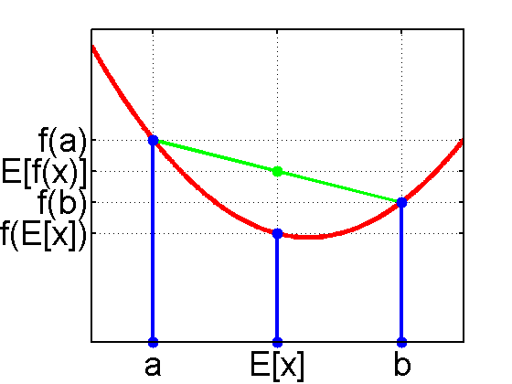

function jensensInequalityFigure()
f = @(x) 0.3*(x-3.5).^2 + 2;
domain = 0:0.01:6;
figure; hold on;
plot(domain,f(domain),'-r','LineWidth',4);
xdata = [[1;1] [3;3] [5;5] ];
ydata = [[0;f(1)] [0;f(3)] [0;f(5)] ];
line(xdata,ydata,'Color','b','LineWidth',3);
plot([1,5],f([1,5]),'-g','LineWidth',3);
plot(xdata(:),ydata(:),'.b','MarkerSize',30);
plot(3,(f(1)+f(5))/2,'.g','MarkerSize',30);
grid on; box on;
set(gca,'XTick',[1,3,5],'YTick',[f(3),f(5),((f(1)+f(5))/2),f(1)]);
set(gca,'XTickLabel',{'a','E[x]','b'});
set(gca,'YTickLabel',{'f(E[x])','f(b)','E[f(x)]','f(a)'});
set(gca,'FontSize',28,'LineWidth',2);
placeFigures('square',false);
printPmtkFigure('jensens');
end
